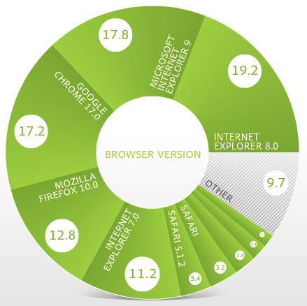

« {{activeSlide + 1}} / {{totalSlides}} »
Any application that can be written in JavaScript, will eventually be written in JavaScript.
–Jeff Atwood, in his 2007 blog post:
The Principle of Least Power
JS was invented 17 years ago. During that year:
... But debugging difficulty is related to complexity.
Do you debug your JavaScript by adding code like this?
There's no shame in this... In fact, it resembles:
* Not covered here in great detail

Source: Adobe SiteCatalyst NetAverages as of March 18, 2012 (sadly discontinued)
The part that you've all been waiting for...
But first a disclaimer:
Accurate as of Early September 2012.
Pre-requisite:
Everyone knows about console.log, right?
May you never alert() again!
In any dev-tools tab other than the console,
hit Esc to open a mini-console.
console.log() takes multiple arguments.Similar to jQuery DOM selection, but without jQuery.
Jump to DOM node in Elements panel from console
⬆ + ⬇ arrow keys scroll through command history
Persist contents after redirect
The console can only interact with one page. If you've got a frameset or iframe to deal with, it can be a pain.
Copy the result of a console command to the clipboard:
Just type in your math problem and get the answer:
a.k.a. "Sources" in Chrome image credit
| Line Breakpoints | |
| Break on JS Errors | |
| Break on DOM change | |
| Break on XHR url match |
Almost Universal Keyboard Shortcuts:
: ⌘/, ⌘', ⌘; respectively
Auto-updating value list for specified variables. Exactly like variable watches if you ever used VB, VC++, etc.
... because apparently we can't even agree on a standard for tab names.
Add, Edit, & Delete HTML & CSS inside the browser
Preview focused, hover, active, visited states
|
Clicking color swatches: toggle between hex, short hex, RGB, HSL, named, etc. (Shift+click on Chrome) |
|
| Clicking the swatch brings up a color selection dialog |
Lists stylesheets, scripts, images, etc used on the page
Firefox & IE don't have a "Resources" tab but some functionality is implemented in other tabs
Resources tab shows local storage, cookies, caches, etc.
Storage tab does same thing
Panel usually must to be open before page loads to work; may require refresh
Ctrl/⌘+Shift+Del
Dialog to clear cache & other data
Displays are all slightly different but all show wait time, download time, etc for each external resource
{todo: screenshot of my blog}
Often, using the keyboard shortcut to toggle them off & on will fix it
What was the one slide/feature that Chrome does not have which some others do?
... Chrome is awesome!
Un-dock dev tools
Increase Dev tools font size: Chrome, FireBug.
Dev Tools of the Dev Tools (undocked)
Slides: tinyurl.com/browsergems
Inspired by:
25 Secrets of the Browser Developer Tools
{kind=link}
{kind=link}
{kind=link}
{kind=link}
{kind=link}